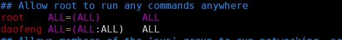
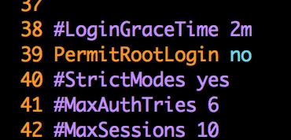
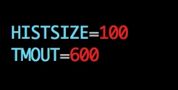
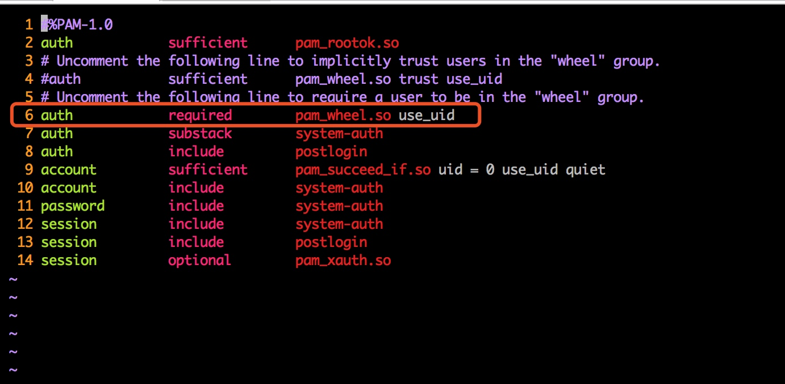

设定密码策略
修改 /etc/login.defs 配置文件
PASS_MAX_DAYS 90 密码最长有效期
PASS_MIN_DAYS 10 密码修改之间最小的天数
PASS_MIN_LEN 8 密码长度
PASS_WARN_AGE 7 口令失效前多少天开始通知用户修改密码
脚本
#! /bin/bash
# Author: Sajor
# Date: 2018-10-12
# Function: 实现对用户密码策略的设定，如密码最长有效期等
read -p "设置密码最多可多少天不修改：" A
read -p "设置密码修改之间最小的天数：" B
read -p "设置密码最短的长度：" C
read -p "设置密码失效前多少天通知用户：" D
sed -i '/^PASS_MAX_DAYS/c\PASS_MAX_DAYS '$A'' /etc/login.defs
sed -i '/^PASS_MIN_DAYS/c\PASS_MIN_DAYS '$B'' /etc/login.defs
sed -i '/^PASS_MIN_LEN/c\PASS_MIN_LEN '$C'' /etc/login.defs
sed -i '/^PASS_WARN_AGE/c\PASS_WARN_AGE '$D'' /etc/login.defs
echo "已设置好密码策略......"
对用户密码强度的设定
打开 /etc/pam.d/system-auth 文件 ，修改如下。我们设置新密码不能和旧密码相同，同时新密码至少8位，还要同时包含大字母、小写字母和数字
password requisite pam_pwquality.so try_first_pass local_users_only retry=3 authtok_type= difok=1 minlen=8 ucredit=-1 lcredit=-1 dcredit=-1
- difok= ：此选项用来定义新密码中必须要有几个字符和旧密码不同
- minlen=：此选项用来设置新密码的最小长度
- ucredit= ：此选项用来设定新密码中可以包含的大写字母的最大数目。-1 至少一个
- lcredit=：此选项用来设定新密码中可以包含的小写字母的最大数目
- dcredit=：此选项用来设定新密码中可以包含的数字的最大数目
注：这个密码强度的设定只对普通用户有限制作用，root用户无论修改自己的密码还是修改普通用户的时候，不符合强度设置依然可以设置成功
脚本
#! /bin/bash
# Author: Sajor
# Date: 2018-10-12
# Function: 对用户密码强度的设定，新密码不能和旧密码相同，同时新密码至少8位，还要同时包含大字母、小写字母和数字
sed -i '/pam_pwquality.so/c\password requisite pam_pwquality.so try_first_pass local_users_only retry=3 authtok_type= difok=1 minlen=8 ucredit=-1 lcredit=-1 dcredit=-1' /etc/pam.d/system-auth
对用户的登录次数进行限制
有一些攻击性的软件是专门采用暴力破解密码的形式反复进行登录尝试，对于这种情况，我们可以调整用户登录次数限制，使其密码输入3次后自动锁定，并且设置锁定时间，在锁定时间内即使密码输入正确也无法登录
打开 /etc/pam.d/sshd 文件，在 #%PAM-1.0 的下面，加入下面的内容，表示当密码输入错误达到3次，就锁定用户150秒，如果root用户输入密码错误达到3次，锁定300秒。锁定的意思是即使密码正确了也登录不了
pam_tally2 查看被锁定的用户
pam_tally2 --reset -u username 将被锁定的用户解锁
脚本
#! /bin/bash
# Author: Sajor
# Date: 2018-10-12
# Function: 对用户登录输入错误密码次数做限制
n=`cat /etc/pam.d/sshd | grep "auth required pam_tally2.so "|wc -l`
if [ $n -eq 0 ];then
sed -i '/%PAM-1.0/a\auth required pam_tally2.so deny=3 unlock_time=150 even_deny_root root_unlock_time300' /etc/pam.d/sshd
fi
创建新用户
useradd -m user_name
passwd user_name
添加sudo 权限
vim /etc/sudoers

不过如图中所示去添加，在user_name执行sudo时，会要求输入密码，
不想输入密码可以将最后的那个 ALL 改为 NOPASSWD:ALL
禁止ROOT用户远程登录
打开 /etc/ssh/sshd_config

脚本设置禁止ROOT用户远程登录
sed -i '/PermitRootLogin/c\PermitRootLogin no' /etc/ssh/sshd_config
设置历史命令保存条数和账户超时时间
设置账户保存历史命令条数，超时时间 。打开 /etc/profile ,修改如下

使用脚本修改配置文件
read -p "设置历史命令保存条数：" E
read -p "设置账户自动注销时间：" F
sed -i '/^HISTSIZE/c\HISTSIZE='$E'' /etc/profile
sed -i '/^HISTSIZE/a\TMOUT='$F'' /etc/profile
设置只有指定用户组才能使用su命令切换到root用户
在linux中，有一个默认的管理组 wheel。在实际生产环境中，即使我们有系统管理员root的权限，也不推荐用root用户登录。一般情况下用普通用户登录就可以了，在需要root权限执行一些操作时，再su登录成为root用户。但是，任何人只要知道了root的密码，就都可以通过su命令来登录为root用户，这无疑为系统带来了安全隐患。所以，将普通用户加入到wheel组，被加入的这个普通用户就成了管理员组内的用户。然后设置只有wheel组内的成员可以使用su命令切换到root用户。
比如，我们将普通用户Sajor加入wheel组。
usermod -G wheel Sajor
然后，我们修改配置文件 /etc/pam.d/su ，将这行的注释给去掉

然后去 /etc/login.defs 末尾加入 SU_WHEEL_ONLY yes 即可。

使用脚本设置配置文件
sed -i '/pam_wheel.so use_uid/c\auth required pam_wheel.so use_uid ' /etc/pam.d/su
n=`cat /etc/login.defs | grep SU_WHEEL_ONLY | wc -l`
if [ $n -eq 0 ];then
echo SU_WHEEL_ONLY yes >> /etc/login.defs
fi
对Linux账户进行管理
使用命令 userdel -r 用户名 删除不必要的账号
使用命令 passwd -l 用户名 锁定不必要的账号
使用命令 awk -F: '(\(7=="/bin/bash"){print \)1}' /etc/passwd 查看具有登录权限的用户
使用命令 awk -F: '(\(3==0)' /etc/passwd 查看UID为0的账号，UID为0的用户会自动切换到root用户，所以危害很大
使用命令 awk -F: '(\)2=="")' /etc/shadow 查看空口令账号，如果存在空口令用户的话必须设置密码
使用脚本对账户进行管理
#! /bin/bash
# Author: Sajor
# Date: 2018-10-11
# Function: 对系统中的用户做检查，加固系统
echo "系统中有登录权限的用户有："
awk -F: '($7=="/bin/bash"){print $1}' /etc/passwd
echo "********************************************"
echo "系统中UID=0的用户有："
awk -F: '($3=="0"){print $1}' /etc/passwd
echo "********************************************"
N=`awk -F: '($2==""){print $1}' /etc/shadow|wc -l`
echo "系统中空密码用户有：$N"
if [ $N -eq 0 ];then
echo "恭喜你，系统中无空密码用户！！"
echo "********************************************"
else
i=1
while [ $N -gt 0 ]
do
None=`awk -F: '($2==""){print $1}' /etc/shadow|awk 'NR=='$i'{print}'`
echo "------------------------"
echo $None
echo "必须为空用户设置密码！！"
passwd $None
let N--
done
M=`awk -F: '($2==""){print $1}' /etc/shadow|wc -l`
if [ $M -eq 0 ];then
echo "恭喜，系统中已经没有空密码用户了！"
else
echo "系统中还存在空密码用户：$M"
fi
fi
对重要的文件进行锁定，即使ROOT用户也无法删除
chattr 改变文件或目录的扩展属性
Usage: chattr [-RVf] [-+=aAcCdDeijsStTu] [-v version] files...
lsattr 查看文件目录的扩展属性
- a：只能附加数据
- A：不修改访问时间
- c：压缩文件
- C：不执行写入时复制（COW） 。多个调用者获取同一个资源，这时，另一个调用者对这资源进行了修改，不生成一个副本给
- d：不 dump
- D: 同步更新目录
- e：extent格式（一种文件系统格式）
- i：不能修改。不能删除或重命名，不能创建到该文件的链接，也不能向该文件写入数据。只有超级用户或拥有 CAP_LINUX_IMMUTABLE 能力的进程才能设置或清除此属性。
- j：数据日志
- s：安全删除
- S：同步更新
- t：不知道文件尾部合并
- T：目录层次的顶部
- u：文件被删除时，其内容会被保存，后面可以请求恢复
下面的只读属性，可以使用 lsattr列出，但不能被 chattr 修改：
- E：压缩错误
- h：巨大的文件
- I：索引目录
- N：内联数据
- X：压缩原始访问
- Z：压缩文件是脏的
并不是所有文件系统都支持所有标志；参考文件系统手册了解如btrfs(5), ext4(5), 和 xfs(5)文件格式的更多详情。
chattr +i /etc/passwd /etc/shadow //增加属性
chattr -i /etc/passwd /etc/shadow //移除属性
lsattr /etc/passwd /etc/shadow
参考： chattr命令详解
使用脚本对重要文件进行锁定
#! /bin/bash
# Author: Sajor
# Date：2018-10-10
# Function: 锁定创建用户和组的文件，使之无法对用户和组进行操作！
read -p "警告：此脚本运行后将无法添加删除用户和组！！确定输入Y，取消输入N；Y/N：" i
case $i in
[Y,y])
chattr +i /etc/passwd
chattr +i /etc/shadow
chattr +i /etc/group
chattr +i /etc/gshadow
echo "锁定成功！"
;;
[N,n])
chattr -i /etc/passwd
chattr -i /etc/shadow
chattr -i /etc/group
chattr -i /etc/gshadow
echo "取消锁定成功！！"
;;
*)
echo "请输入Y/y or N/n"
esac
总结
脚本
#! /bin/bash
# Author:Sajor
# Date:2018-10-11
# Function:对账户的密码的一些加固
read -p "设置密码最多可多少天不修改：" A
read -p "设置密码修改之间最小的天数：" B
read -p "设置密码最短的长度：" C
read -p "设置密码失效前多少天通知用户：" D
sed -i '/^PASS_MAX_DAYS/c\PASS_MAX_DAYS '$A'' /etc/login.defs
sed -i '/^PASS_MIN_DAYS/c\PASS_MIN_DAYS '$B'' /etc/login.defs
sed -i '/^PASS_MIN_LEN/c\PASS_MIN_LEN '$C'' /etc/login.defs
sed -i '/^PASS_WARN_AGE/c\PASS_WARN_AGE '$D'' /etc/login.defs
echo "已对密码进行加固，新用户不得和旧密码相同，且新密码必须同时包含数字、小写字母，大写字母！！"
sed -i '/pam_pwquality.so/c\password requisite pam_pwquality.so try_first_pass local_users_only retry=3 authtok_type= difok=1 minlen=8 ucredit=-1 lcredit=-1 dcredit=-1' /etc/pam.d/system-auth
echo "已对密码进行加固，如果输入错误密码超过3次，则锁定账户！！"
n=`cat /etc/pam.d/sshd | grep "auth required pam_tally2.so "|wc -l`
if [ $n -eq 0 ];then
sed -i '/%PAM-1.0/a\auth required pam_tally2.so deny=3 unlock_time=150 even_deny_root root_unlock_time300' /etc/pam.d/sshd
fi
echo "已设置禁止root用户远程登录！！"
sed -i '/PermitRootLogin/c\PermitRootLogin no' /etc/ssh/sshd_config
read -p "设置历史命令保存条数：" E
read -p "设置账户自动注销时间：" F
sed -i '/^HISTSIZE/c\HISTSIZE='$E'' /etc/profile
sed -i '/^HISTSIZE/a\TMOUT='$F'' /etc/profile
echo "已设置只允许wheel组的用户可以使用su命令切换到root用户！"
sed -i '/pam_wheel.so use_uid/c\auth required pam_wheel.so use_uid ' /etc/pam.d/su
n=`cat /etc/login.defs | grep SU_WHEEL_ONLY | wc -l`
if [ $n -eq 0 ];then
echo SU_WHEEL_ONLY yes >> /etc/login.defs
fi
echo "即将对系统中的账户进行检查...."
echo "系统中有登录权限的用户有："
awk -F: '($7=="/bin/bash"){print $1}' /etc/passwd
echo "********************************************"
echo "系统中UID=0的用户有："
awk -F: '($3=="0"){print $1}' /etc/passwd
echo "********************************************"
N=`awk -F: '($2==""){print $1}' /etc/shadow|wc -l`
echo "系统中空密码用户有：$N"
if [ $N -eq 0 ];then
echo "恭喜你，系统中无空密码用户！！"
echo "********************************************"
else
i=1
while [ $N -gt 0 ]
do
None=`awk -F: '($2==""){print $1}' /etc/shadow|awk 'NR=='$i'{print}'`
echo "------------------------"
echo $None
echo "必须为空用户设置密码！！"
passwd $None
let N--
done
M=`awk -F: '($2==""){print $1}' /etc/shadow|wc -l`
if [ $M -eq 0 ];then
echo "恭喜，系统中已经没有空密码用户了！"
else
echo "系统中还存在空密码用户：$M"
fi
fi
echo "即将对系统中重要文件进行锁定，锁定后将无法添加删除用户和组"
read -p "警告：此脚本运行后将无法添加删除用户和组！！确定输入Y，取消输入N；Y/N：" i
case $i in
[Y,y])
chattr +i /etc/passwd
chattr +i /etc/shadow
chattr +i /etc/group
chattr +i /etc/gshadow
echo "锁定成功！"
;;
[N,n])
chattr -i /etc/passwd
chattr -i /etc/shadow
chattr -i /etc/group
chattr -i /etc/gshadow
echo "取消锁定成功！！"
;;
*)
echo "请输入Y/y or N/n"
esac
建立日志服务器
本文由 Sajor
创作，采用 知识共享署名4.0 国际许可协议进行许可
本站文章除注明转载/出处外，均为本站原创或翻译，转载前请务必署名
最后编辑时间为: 2019-11-18T22:07:32+08:00